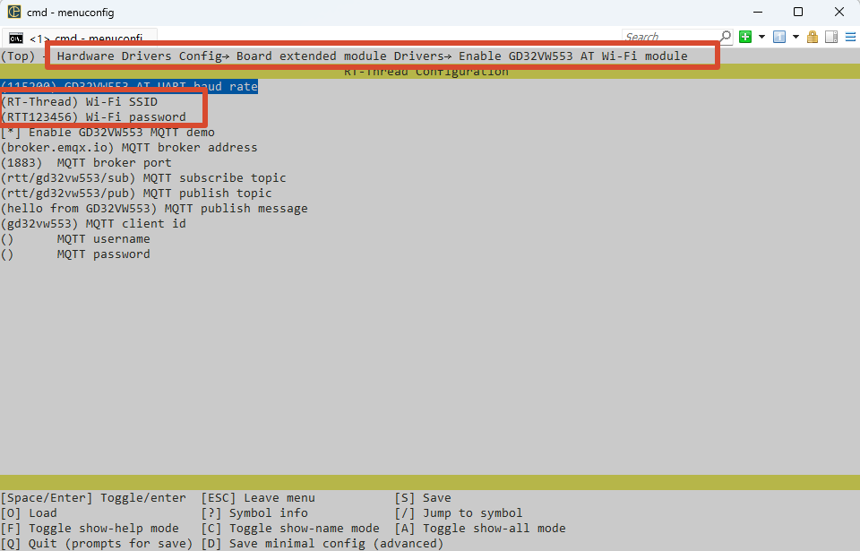

Gino_component_mqtt
1. Introduction
This project is the GD32H77D Gino development board reference project for GD32VW553, SAL, and kawaii-mqtt publish/subscribe. It is used to learn, configure, and validate MQTT publish/subscribe separately. The standalone project enables only the drivers and components required by this feature, and can be used as a reference for application development and integration.
Primary device: wifi0.
All examples keep uart1 as the FinSH/MSH console at 115200-8-N-1, and PC4 LED is used as the run indicator.
Before running the example, change the Wi-Fi settings to match your own network.
Configuration in Env:

Configuration in RT-Thread Studio:

Current project provides the following MSH commands:
Command |
Function |
Example/Note |
|---|---|---|
|
Start the GD32VW553 MQTT demo, wait for |
|
|
Publish one message through the current MQTT connection. |
|
|
Stop the MQTT demo, disconnect MQTT/TCP, and release client resources. |
|
|
Check the connection state and IP address of |
Confirm that the network is ready. |
|
List registered system devices. |
Confirm that UART, PIN, netdev, and other dependencies exist. |
|
Check whether the primary device used by this example is registered. |
Checks |
You can use your own topics when running the example.
2. MQTT Publish/Subscribe Protocol Details
The demo first waits for wifi0 to become ready and temporarily selects it as the SAL default netdev. kawaii-mqtt handles MQTT encoding/decoding and session state. The underlying socket goes through SAL, AT socket, UART4, and GD32VW553. The publish command directly calls the active MQTT client and returns the real send result to MSH.
The complete data path is:
MSH publish -> kawaii-mqtt -> socket/SAL -> AT socket -> UART4 -> GD32VW553 -> Broker
The protocol layer only defines communication and data processing rules. Final validation still depends on controller clocks, pin multiplexing, interrupt/DMA handling, and upper-layer state machines. Device discovery, bus registration, or a successful build cannot replace a complete data transfer test.
3. GD32H77D UART4 and Cortex-M7 Features
The GD32H77D side mainly uses Cortex-M7, UART4, RT-Thread IPC, and memory resources. Wi-Fi/TCP/IP is offloaded to GD32VW553. MQTT packets are still encoded and decoded by kawaii-mqtt on the H7 side, then sent through SAL/AT socket.
4. RT-Thread AT Device, SAL, and MQTT Device Interface
The network foundation is the wifi0 at_device/netdev and SAL socket. The demo protects client state with an RT-Thread mutex, then calls mqtt_connect, mqtt_subscribe, and mqtt_publish.
Primary device: wifi0. Use list_device and gino_device_probe first to check whether the device has been registered. Upper-layer file system, network, or GUI components still need separate validation for mount, link, or refresh state.
5. Hardware
GD32VW553 communicates through UART4 (PB12/PB13), with PC5 controlling reset. Configure Wi-Fi, Broker, topics, and credentials locally.
Default console: UART1, PA2/PA3, AF7, 115200-8-N-1.
6. Example
Source paths below are relative to the project directory in the SDK repository:
applications/gd32vw553_mqtt_demo.capplications/gd32vw553_at_port.c../../packages/kawaii-mqtt-latest/../../packages/at_device-latest/class/gd32vw553/
Read applications/main.c and applications/device_probe.c first, then follow the data path into the corresponding driver, component, or package. The example keeps MSH commands so device registration and runtime state can be observed without changing application code.
6.1 Runtime Commands
ifconfiggd32vw553_mqtt_startgd32vw553_mqtt_pub rtt/gino hellogd32vw553_mqtt_stop
6.2 Operation Steps
Check power, wiring, external modules, and interface logic levels.
Reset the development board and confirm that the UART1 console is available and PC4 LED blinks normally.
Run
list_deviceand confirm that dependency buses and target devices are registered.Run the commands above in order while observing return values, external waveforms, network state, or display results.
7. Runtime Results
7.1 Expected Behavior
ifconfigshows thatwifi0is connected.The start command completes TCP/MQTT connection and subscribes to the target topic.
After publishing, the Broker/subscriber receives the payload, the receive callback prints subscribed messages, and the stop command releases the client and restores the default netdev.